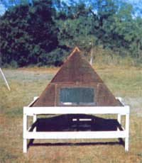
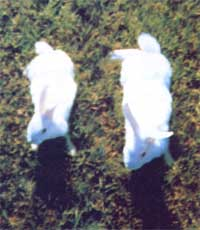
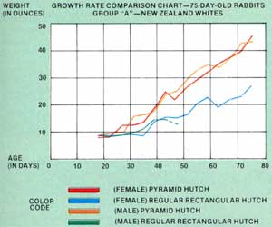
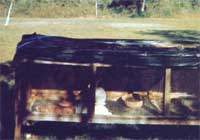
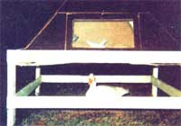
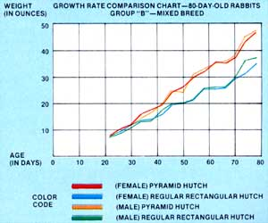

Pyramid Power Helps My Rabbits Grow
By the Mother Earth News editors
November/December 1977
Does "pyramid power" exist? Can "cosmic forces" be tapped to preserve meat, grow healthier plants, and do any of a hundred other wondrous things? We hear a lot of heated discussion on this subject ... and see far too little hard data. Few people, it seems, want to take the time to perf orm a controlled experiment to prove or disprove the existence of "pyramid energy". Which is why we're pleased to present the following report by Texas homesteader/experl men ter James Brock.
For the last few years, I've been fascinated by pyramids and their possible influences on living matter. And I've read a good many books and articles on " pyramid power" over the past two years or so ... but in all my readings, I never came across very much information on the subject of whether and in what ways animals might be affected by enclosure in pyramids. The only way I could find out how (and if) "pyramid energy" would affect animals-it seemed-was to experiment on my own ... and that's precisely what I did.
THE EXPERIMENT
A friend of mine raises rabbits as a hobby ... so when I began searching for animals to use in my pyramid experiment, I approached him with the idea of "borrowing" some of his bunnies. MY friend thought I was a little weird ... but he finally agreed (rather reluctantly) to let me have some rabbits.
To make the experiment more valid than it might otherwise be, I decided to start with a total of eight of the animals ... four each from two separate litters. (I figured that this would reduce the chances of my accidentally picking the "best" individual of the litter for the pyramid hutch ... a situation that could easily have occurred had I started with just two rabbits.)
What I did was this: I took two bucks and two does from one litter and labeled them Group A ... then I selected two bucks and two does from the other litter and called them Group B. (The Group A bunnies were 19-day-old White New Zealanders. The Group B animals-which were 22 days old at the start of the experiment-were of the "Heinz 57" variety ... which is to say their breeding was so mixed up it would've taken a genealogical wizard to figure it out!)
To start the experiment, I simply selected a male and a female from Group A and a male and a female from Group B and put the four animals in a pyramidshaped hutch (see accompanying photos). The remaining two male/female pairs-the "control" rabbits-were placed in a standard, rectangular rabbit hutch. Then, for the next eight weeks, I fed all eight rabbits equal portions of pellets and vegetable scraps ... and I weighed the bunnies every four days.
THE RESULTS
Within two weeks' time, the most fantastic thing happened! The pyramid. housed rabbits started to pull ahead of the "control" cottontails in weight gain ... and continued to pull further ahead with every weighing! By the end of the experiment (57 days later), the Group A rabbits that had been housed in the pyramid hutch weighed an average of 46.5 ounces, compared to a measly 28.0 ounces for the one Group A rabbit that was still alive in the rectangular hutch. Likewise, the Group B pyramiders (who tipped the scales at 48.0 to 48.5 ounces) outweighed the Group B "controls" by an average of 12 ounces!
In other words, then, at the end of eight weeks the four pyramid rabbits weighed an average of 40.7% more than the control bunnies. On an individual basis, the smallest pyramid-raised rabbit weighed more at the age of 75 days than the largest control rabbit weighed at the age of 80 days! (The complete results are given in Tables 1 and 2 and the two growth charts that accompany them.)
SOME OBSERVATIONS
Interestingly, the pyramid-raised animals drank twice as much water as their non-pyramid-enclosed peers. I doubt if this had anything to do with the former group's spectacular weight gain, however ... rather, I think the pyramiders' higher water consumption could be traced to their hyperactivity. (Don't ask me why, but the pyramid bunnies always seemed to be more active than the others. On warmer days, especially, the control rabbits were listless while the pyramiders just couldn't sit still! )
To me, the most significant differences between the "test" and "control" bunnies were those of attitude, appearance, and behavior. The pyramidhoused animals had shinier coats, clearer eyes and ears, and-in general--a more healthy "look" about them than their peers.
These aren't just my observations, either. Several skeptical friends of mine visited me from time to time throughout the eight-week experiment ... and each time they came, I put the rabbits to an
other test. While my visitors weren't looking, I took one "supercharged" bun. ny and one "control" animal and placed them side by side ... then I asked my impartial observers to pick out the better-looking bunny. Without fail, my friends always chose the pyramid-raised rabbit.
Of course, a few people still think I'm trying to pull a fast one ... but the vast majority of those who've seen my test results are beginning to think there's really something to this "pyramid busi. ness" after all. (I must confess that even I didn't think my results would turn out as well as they finally did!)
WHY NOT TRY IT YOURSELF?
You don't have to take my word for the above results ... you can (and should) repeat the experiment for yourself. All you need are a few rabbits (or chickens, or whatever), a pyramid-shaped enclosure to keep them in (see directions below), and a more-or-less standard pen, coop, or hutch in which to raise some "control" animals.
Here are a few things to keep in mind if you do decide to build your own pyramid hutch:
[1] For best results, your hutch should be proportioned after the Great Pyramid of Giza (i.e., it should have four sides, each with a slope of about 52°). Don't worry about being extremely precise... the general shape is what counts.
[2] Try to minimize the use of ferrous (iron-containing) materials in the con. struction of the pyramid. (The floor of my experimental hutch was made of hardware clothe-a magnetic materialbut the screening didn't seem to inter. fere with my results. Still, it would've been better to use some other type of material for the hutch's floor.) Any non-fer rous, non-magnetic material is suitable.
[3] Likewise, the finished structure must be located far away from surrounding water pipes, steel girders, and electrical wiring, for these things will defi. nitely interfere with the entrance of cosmic energy into the pyramid.
[4] Also, the pyramid must be oriented properly with respect to the earth's mag. netic field. Buy a cheap compass and use it-when the time comes-to align the finished hutch as shown in Fig. 1.
[5] Finally, it's important-when designing the pyramid- to keep in mind the Critical Energy Ratio. That is, the volume of matter (plants, rabbits, razor blades, or what have you) enclosed in the pyramid must not exceed 5% of the structure's total volume. (The volume of a pyramid is equal to its base squared times its height divided by three.) According to the literature, this 5% figure is critically important in experiments with inanimate objects. It may not be quite as crucial in tests involving animals, though.
With these guidelines in mind, you're ready to proceed to the actual fabrication of the pyramid.
CONSTRUCTING A PYRAMID HUTCH
You don't need any great amount of skill to build a pyramid hutch exactly like the one I used in my experiment. With a little patience, even an unskilled carpenter can handle the job. (I know, because I'm as unskilled as they come!)
The construction of the hutch can be broken down into four stages: [1] cutting the frame members, [2] erecting the support stand, [3] joining the frame to the stand, and 14] attaching the walls and door.
THE FRAME
For my pyramid's frame, I used four 48"-long two-by-fours ... and (for the purposes of illustration) I'll assume you're going to do the same. With the aid of a protractor or other anglemeasuring device, cut the four framing members off at a 480 angle on one end and a 420 angle at the other end. (See Fig. 2.) Don't worry if your angles aren't perfect ... utter precision isn't necessary.
Next, cut a 2 X 2 piece of wood to the length A-C in Fig. 2. This block of wood will be used to reinforce the pyramid's frame at the apex. (A good carpenter would-of course-join the two-byfours at the apex by cutting the upper end of each board at the proper angle. This is difficult to do, however, without specialized tools. Besides, my way is easier and works just as well.)
THE STAND
The next step is to estimate the dimensions of your pyramid's base. To do this, take the length A-B (see Fig. 2) and divide it by 0.951, (For example, if the distance A-B is 48", the finished pyramid's base will be 48 divided by 0.951, or 50.5".)
For the stand's legs, you'll need four 36'-long two-by-fours and four 12"-long two-by-fours. Nail each short piece to a long piece, so that each new "leg" is-in effect-a four-by-four at one end and a two-by-four at the other. (See Fig. 3.)
Now cut two 50.5"-long (assuming the base of your pyramid is to be 50.5") and two 52.5"-long boards from 10 X 4" lumber. Then nail each 50.5" board to two of the stand's legs (leaving a 2" overhang above the 4" X 4" upper portion of each leg, as shown in Fig. 3), and connect the two stand halves together with the 52.5"-long planks. (Again, leave a 2" overhang at the top of the stand.)
For extra sturdiness, you may wantat this point-to join four more one-by-fours to the stand's legs. (See Fig. 3.)
Finally, nail some two-by-two cross braces inside the top of the stand as shown in Fig. 4. You now have a flat support surface on which to tack or staple a hardware cloth (or other) floor. With the installation of a floor, the stand is complete.
JOINING THE FRAME MEMBERS TO THE STAND
For this phase of construction, you'll need an assistant: One person will have to hold the piece(s) in position while the other person does the hammering.
First, angle the ends of the frame members (the ends with the 42' cut) so that they'll fit snugly in the 90* corners of the stand, as shown in Fig. 5. Then-one at a time-nail the frame members to the tops of the stand's legs (42* cut facing down). Finally, nail the uppermost ends of the four frame boards to the 2" X 2" block of wood discussed above (paragraph two under "The Frame").
At this point, you'll have an extremely strong basic structure on which to attach the pyramid's four walls:
THE WALLS AND DOOR
Label four 52" X 52" pieces of wall material (I used inexpensive wood paneling, but-here again-any non-ferrous material you want to use is fine) "East", "West", "North", and "South" I ... then-one at a time-lay these pieces up against the east-, west-, north-, and south-facing sides of the pyramid frame, trace a triangle on the inside of each piece using the 2 X 4 frame members as straightedges, and cut out the triangular-shaped wall pieces (leaving an extra inch around the perimeter of each piece to ensure a neat fit when the pieces are nailed in place).
Now nail three of the four wall pieces to the frame. Fill in any gaps or cracks at the walls' edges with caulking compound and/or strips of wood.
To make the pyramid's door, cut a rectangular opening near the base of the fourth wall panel (see Fig. 6). If you want, you can use this rectangular piece of paneling as the door itself ... otherwise-if you prefer a see-through opening-cut a rectangular section out of this piece and staple or tack a piece of screening (non-ferrous) to the "picture frame" you've just created. (See Fig. 6.)
Attach two hinges to the door's bottom edge, rig a latch at its top (you want the door to open down), and affix the door to the remaining wall panel (Fig. 7). Nail the last wall panel to the pyramid, and your "cosmic energy" hutch is complete!
A PARTING THOUGHT
A lot of people-I'm sure-will be totally turned off by the ideas expressed in this article. (I can hear it now: "It smells of occultism" . . . "Ah, another rip-off" . . . "What's this guy been smoking? ") All I can say is, nothing turns me off more than closed-mindedness. And that's exactly what it is when someone rejects hard data in favor of unfounded beliefs. There's no other word for it.
Remember: You don't have to take my word for the above results. Experiment for yourself! What have you got to lose? If just half my results are true, pyramid power has to be capable of benefiting every back- to-the- lander who raises animals. Think of it this way: Can you afford to guess that I'm wrong?
James Brock-author of the above article-says he'd like to hear from other pyramid experimenters with regard to any and all failures, successes, difficulties in building the pyramid, etc. If you write to Jim (at 4 if Early Trait, San Antonio, Tex. 78228), be sure to enclose a stamped, self-addressed envelope and it little something ($1.00, say) to help cover the cost of it personal reply.-The Editors.
FACTORS THAT MAY INFLUENCE THE OUTCOME OF YOUR EXPERIMENTS
Not all "pyramid power" experiments turn out as expected (as you know if you've done any reading on the subject). Different experimenters obtain different results ... for a variety of possible reasons.
Some scientists believe that climatic conditions can affect the powers of the pyramid. Others say that solar flares, sunspot activity, cosmic rays, the changing seasons, and/or the phases of the moon can disrupt the flow of energy into or through pyramids. But alas, these men and women of science completely neglect the most important (in my opinion) variable in the universe: the human element .
Metaphysical philosophy teaches us that our thoughts are as real as chairs, tables, rocks, or other material objects. Edgar Cayce-America's most famous (and most thoroughly documented) psychic-maintained that thoughts are tangible things that have a definite influence on everything that happens on earth. Similarly, Jesus said that if a person thought about doing something (He specifically mentioned-as examples-thoughts of anger and adultery), it was equivalent to the actual committed act. Jesus, therefore, apparently felt that thoughts were as real as physical actions.
If any of the above is true (as I believe it is), then it should be quite possible for good thoughts-positive thoughts-to influence directly the results of your experiments. So-by all means-believe! Tell yourself that what you're doing will give you the best possible results. Try thinking positively: You may be surprised at the outcome ... whether you're dealing with rabbits, vegetables, people, or anything else under the sun. -JB.
|
PHOTOS BY DAN JIMENEZ This ""pyramid hutch"" housed the autor's four ""test"" rabbits. |
 A typical ""control"" bunny (left) with a ""cosmic"" bunny (right). |
 All four ""control"" rabbits were raised in the hutch shown here. |
|
 A feathered visitor inspects the pyramid. Note see-through door. |
 |
 |
|
 |
 |
|